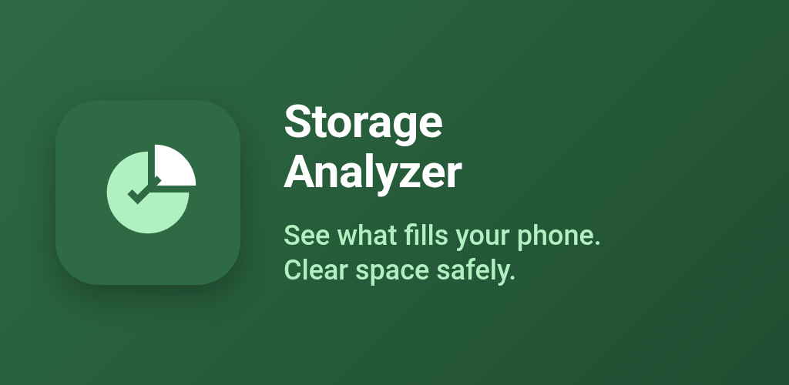

Analizador de almacenamiento
Encuentra archivos grandes, duplicados y antiguos y libera espacio.



Acerca de la app
Descubre qué llena tu móvil y libera espacio, sin conectarte a internet. Analizador de almacenamiento no pide el permiso de internet, así que Android no le deja conectarse en absoluto. Sin anuncios, sin analíticas, sin informes de errores, sin cuenta, sin nube. Todo lo que encuentra se queda en tu móvil. Puedes comprobarlo tú mismo: la app muestra sus permisos de red, leídos en directo de Android, en su pantalla de privacidad. QUÉ ENCUENTRA - Archivos grandes, ordenados por tamaño, con filtros para imágenes, vídeos, audio, documentos, APK y archivos comprimidos. - Duplicados exactos: los archivos de más de 1 MB con el mismo tamaño se comparan con una suma SHA-256, así que solo aparecen copias reales. La copia más reciente se conserva por defecto y siempre se conserva al menos una. - Archivos antiguos sin cambios desde hace más de 90 días, agrupados en Descargas, Capturas de pantalla, archivos de WhatsApp, instaladores APK y otros. - Tamaño de las carpetas en un mapa que puedes recorrer tocando, con vista de lista y ruta para volver atrás. - Espacio que ocupa cada app (app, datos y caché), con acceso directo a sus ajustes del sistema para borrar la caché. BORRADO SEGURO Los archivos borrados van primero a la papelera de la app. Deshaz al momento o restáuralos durante 7 días. Después se eliminan definitivamente. Los archivos se mueven, no se copian, así que es rápido incluso con vídeos grandes. Nunca se borran carpetas. TÚ TIENES EL CONTROL - Los análisis solo se hacen cuando tocas Analizar, nunca en segundo plano. - El modo completo usa el acceso a todos los archivos para revisar cada carpeta del almacenamiento interno y de la tarjeta SD. - ¿Prefieres no darlo? El modo limitado solo ve las fotos, vídeos y música que Android comparte con las apps. - El acceso a datos de uso solo se pide en la pantalla de Apps y solo se leen los tamaños de las apps. ADEMÁS - Widget para la pantalla de inicio con el almacenamiento usado, el espacio que puedes liberar y el último análisis. - Tema claro y oscuro según los ajustes del sistema. - Diseños para móvil y tablet. - Compatible con lectores de pantalla. Un solo pago, sin suscripciones ni compras dentro de la app. Nota: la app solo está disponible en inglés. Al desinstalarla también se vacía su papelera. Restaura antes los archivos que quieras conservar.